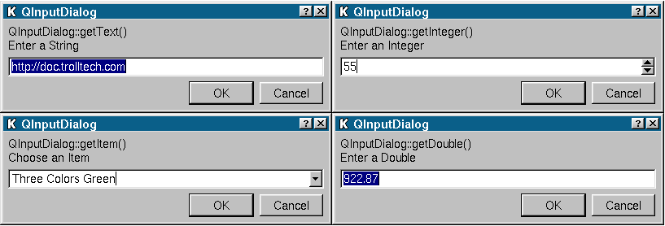

QInputDialog Class Reference
The QInputDialog class provides a simple convenience dialog to get a single value from the user.
More...
#include <qinputdialog.h>
Inherits QDialog.
List of all member functions.
Static Public Members
- QString getText ( const QString & caption, const QString & label, QLineEdit::EchoMode mode = QLineEdit::Normal, const QString & text = QString::null, bool * ok = 0, QWidget * parent = 0, const char * name = 0 )
- int getInteger ( const QString & caption, const QString & label, int value = 0, int minValue = -2147483647, int maxValue = 2147483647, int step = 1, bool * ok = 0, QWidget * parent = 0, const char * name = 0 )
- double getDouble ( const QString & caption, const QString & label, double value = 0, double minValue = -2147483647, double maxValue = 2147483647, int decimals = 1, bool * ok = 0, QWidget * parent = 0, const char * name = 0 )
- QString getItem ( const QString & caption, const QString & label, const QStringList & list, int current = 0, bool editable = TRUE, bool * ok = 0, QWidget * parent = 0, const char * name = 0 )
Detailed Description
The QInputDialog class provides a simple convenience dialog to get a single value from the user.
The input value can be a string, a number or an item from a list. A
label must be set to tell the user what they should enter.
Four static convenience functions are provided:
getText(), getInteger(), getDouble() and getItem(). All the
functions can be used in a similar way, for example:
bool ok;
QString text = QInputDialog::getText(
"MyApp 3000", "Enter your name:", QLineEdit::Normal,
QString::null, &ok, this );
if ( ok && !text.isEmpty() ) {
// user entered something and pressed OK
} else {
// user entered nothing or pressed Cancel
}
 See also Dialog Classes.
Member Function Documentation
double QInputDialog::getDouble ( const QString & caption, const QString & label, double value = 0, double minValue = -2147483647, double maxValue = 2147483647, int decimals = 1, bool * ok = 0, QWidget * parent = 0, const char * name = 0 ) [static]
Static convenience function to get a floating point number from
the user. caption is the text which is displayed in the title
bar of the dialog. label is the text which is shown to the user
(it should say what should be entered). value is the default
floating point number that the line edit will be set to. minValue and maxValue are the minimum and maximum values the
user may choose, and decimals is the maximum number of decimal
places the number may have.
If ok is not-null *ok will be set to TRUE if the user
pressed OK and to FALSE if the user pressed Cancel. The dialog's
parent is parent; the dialog is called name. The dialog will
be modal.
This function returns the floating point number which has been
entered by the user.
Use this static function like this:
bool ok;
double res = QInputDialog::getDouble(
"MyApp 3000", "Enter a decimal number:", 33.7, 0,
1000, 2, &ok, this );
if ( ok ) {
// user entered something and pressed OK
} else {
// user pressed Cancel
}
int QInputDialog::getInteger ( const QString & caption, const QString & label, int value = 0, int minValue = -2147483647, int maxValue = 2147483647, int step = 1, bool * ok = 0, QWidget * parent = 0, const char * name = 0 ) [static]
Static convenience function to get an integer input from the
user. caption is the text which is displayed in the title bar
of the dialog. label is the text which is shown to the user
(it should say what should be entered). value is the default
integer which the spinbox will be set to. minValue and maxValue are the minimum and maximum values the user may choose,
and step is the amount by which the values change as the user
presses the arrow buttons to increment or decrement the value.
If ok is not-null *ok will be set to TRUE if the user
pressed OK and to FALSE if the user pressed Cancel. The dialog's
parent is parent; the dialog is called name. The dialog will
be modal.
This function returns the integer which has been entered by the user.
Use this static function like this:
bool ok;
int res = QInputDialog::getInteger(
"MyApp 3000", "Enter a number:", 22, 0, 1000, 2,
&ok, this );
if ( ok ) {
// user entered something and pressed OK
} else {
// user pressed Cancel
}
QString QInputDialog::getItem ( const QString & caption, const QString & label, const QStringList & list, int current = 0, bool editable = TRUE, bool * ok = 0, QWidget * parent = 0, const char * name = 0 ) [static]
Static convenience function to let the user select an item from a
string list. caption is the text which is displayed in the title
bar of the dialog. label is the text which is shown to the user (it
should say what should be entered). list is the
string list which is inserted into the combobox, and current is the number
of the item which should be the current item. If editable is TRUE
the user can enter their own text; if editable is FALSE the user
may only select one of the existing items.
If ok is not-null *ok will be set to TRUE if the user
pressed OK and to FALSE if the user pressed Cancel. The dialog's
parent is parent; the dialog is called name. The dialog will
be modal.
This function returns the text of the current item, or if editable is TRUE, the current text of the combobox.
Use this static function like this:
QStringList lst;
lst << "First" << "Second" << "Third" << "Fourth" << "Fifth";
bool ok;
QString res = QInputDialog::getItem(
"MyApp 3000", "Select an item:", lst, 1, TRUE, &ok,
this );
if ( ok ) {
// user selected an item and pressed OK
} else {
// user pressed Cancel
}
QString QInputDialog::getText ( const QString & caption, const QString & label, QLineEdit::EchoMode mode = QLineEdit::Normal, const QString & text = QString::null, bool * ok = 0, QWidget * parent = 0, const char * name = 0 ) [static]
Static convenience function to get a string from the user. caption is the text which is displayed in the title bar of the
dialog. label is the text which is shown to the user (it should
say what should be entered). text is the default text which is
placed in the line edit. The mode is the echo mode the line edit
will use. If ok is not-null *ok will be set to TRUE if the
user pressed OK and to FALSE if the user pressed Cancel. The
dialog's parent is parent; the dialog is called name. The
dialog will be modal.
This function returns the text which has been entered in the line
edit. It will not return an empty string.
Use this static function like this:
bool ok;
QString text = QInputDialog::getText(
"MyApp 3000", "Enter your name:", QLineEdit::Normal,
QString::null, &ok, this );
if ( ok && !text.isEmpty() ) {
// user entered something and pressed OK
} else {
// user entered nothing or pressed Cancel
}
This file is part of the Qt toolkit.
Copyright © 1995-2007
Trolltech. All Rights Reserved.